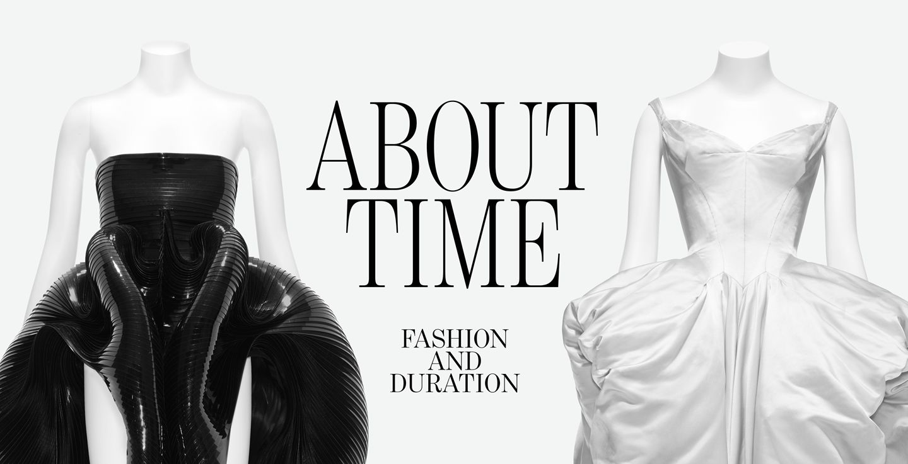

The year 2020 is a milestone for the Metropolitan Museum of Art. The New York institution will celebrate its 150th anniversary with a series of exhibitions, many of which will put the spotlight on masterworks in its collections, as well as new acquisitions made as part of the 2020 Collections Initiative in honor of the anniversary. In keeping with the year’s theme, the Met announced that the Costume Institute’s erstwhile spring exhibition will showcase a century-and- a-half of fashion history from its archive and presented along a “disruptive” timeline. “About Time: Fashion and Duration,” says Andrew Bolton, Wendy Yu Curator in Charge of the Costume Institute, takes a “nuanced and open-ended” approach. “It’s a reimagining of fashion history that’s fragmented, discontinuous, and heterogeneous.”

Bolton found inspiration for the exhibition in the 1992 Sally Potter film Orlando, which was based
on the time-traveling, sexually path-breaking Virginia Woolf novel of the same name. “There’s a
wonderful scene,” he says, “in which Tilda Swinton enters the maze in an 18th-century woman’s
robe, and as she runs through it, her clothes change to a mid-19th-century dress, and she re-
emerges in 1850s England. That’s where the original idea came from.”
Virginia Woolf acts as the show’s “ghost narrator,” with quotes from her time-based books
including Orlando, Mrs. Dalloway, and To the Lighthouse appearing throughout the exhibition,
not unlike how Susan Sontag’s quotes guided viewers through last year’s Camp: Notes on
Fashion show. The philosopher Henri Bergson, whose concept of la durée—time that flows,
accumulates, and is indivisible—also provided some of the show’s framework. In addition,
Michael Cunningham, whose novel The Hours, a postmodernist reading of Mrs. Dalloway, will
contribute a short story to the exhibition’s catalogue. “What I like about Woolf’s version of time is
the idea of a continuum,” Bolton says. “There’s no beginning, middle, or end. It’s one big fat
middle. I always felt the same about fashion. Fashion is the present."
It’s human nature to compartmentalize, to, as Bolton says, “look back at history with
homogenous eyes.” Bolton’s mission with About Time is to challenge and complicate this
tendency, and to get us to think differently about fashion history. To do so, he will divide the 160
women’s garments in the exhibition into two sections or “timescales.” The first is a linear
timeline of black looks. “It’s a very rational, regulated chronology of fashion from 1870 to 2020,
the timescale of modernity,” Bolton explains. The second grouping presents what the curator
describes as counter-chronologies, mostly in white ensembles, though there is also likely to be
bursts of color in places. “You can see them as folds in time,” he says.
In a press release, Max Hollein, director of the Met, elaborated on the concept: “This exhibition
will consider the ephemeral nature of fashion, employing flashbacks and fast-forwards to reveal
how it can be both linear and cyclical.” Bolton will highlight a variety of “folds in time.” They
could include comparisons between two designers of different eras, like Alaïa and Vionnet or
Poiret and Galliano. “Or it might be juxtapositions between two designers from a certain period
who were competitive, and one survived and one didn’t,” like “Chanel and Patou in the ’20s and
Rei Kawakubo and Georgina Godley in the ’80s.”
It’s useful to think of these “counter-chronologies” or “folds” as connections. Bolton makes them
across shape, motif, material, pattern, technique, and decoration. Among his favorites: the
relationship between a black silk faille princess-line dress from the late 1870s and an Alexander
McQueen skirt from 1995. “Over the years, McQueen continually worked with this elongated
silhouette—the princess line basically—and I’ve always felt that the bumster was the most
radical version of the way he achieved it.” He continues: “What the dual timelines try to unravel
is that tension in fashion between change and endurance, and transience and permanence.
Ultimately, I think it advocates for a slowing down of fashion.”
The exhibition, which will be presented in the Met Fifth Avenue’s Iris and B. Gerald Cantor
Exhibition Hall, will be made possible by Louis Vuitton. Bolton is working with Es Devlin, the
visual artist and stage designer, on the exhibition design. “I’ve long admired her work and
wanted to collaborate with her,” he says. “This theme seemed most suitable for her, she’s done
several of what she calls mirror mazes and she often refers to the complexity of time with her
design process.”